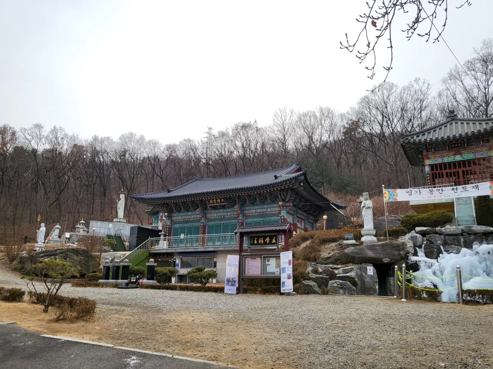
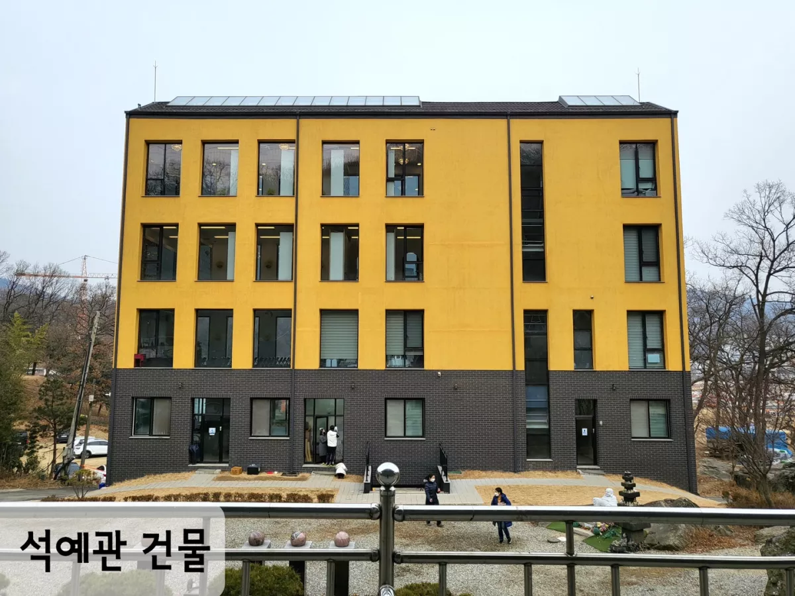
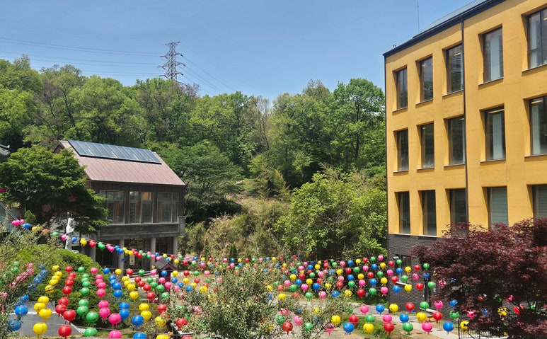
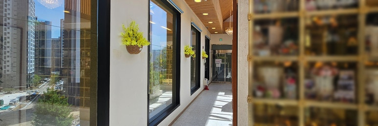
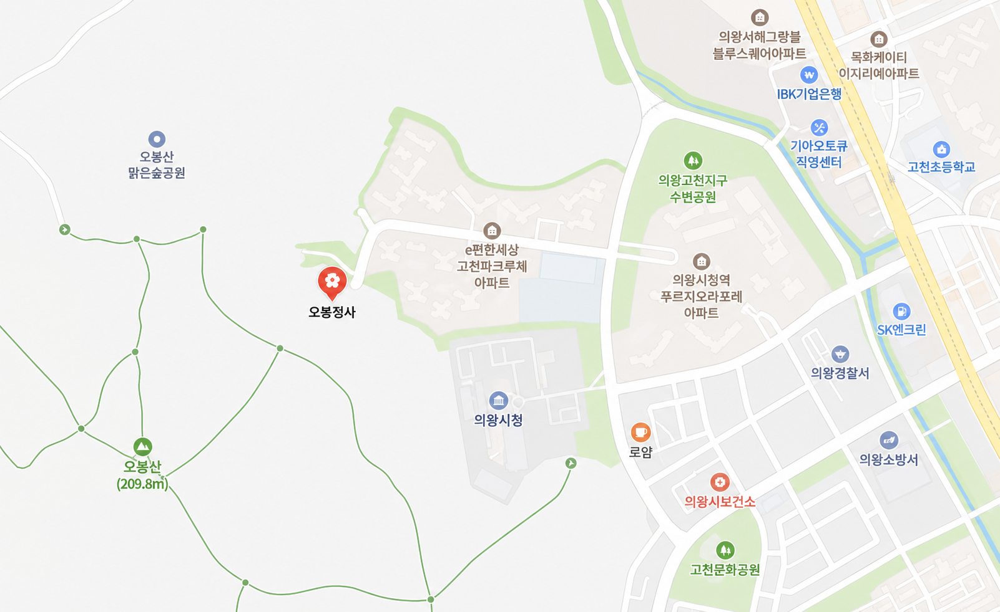

상담 · 방문 예약
방문 전 3가지를 먼저 확인하세요
위치와 교통, 안치 공간 분위기, 비용과 관리 방식을 차분히 안내해드립니다.
Why Obongjeongsa
차분한 시간 속에서 더 깊이 전해지는 마음
오봉정사는 도심과 가까운 의왕의 입지에 사찰 특유의 정숙함을 더해, 가족이 편안하게 찾아와 추모할 수 있는 공간을 지향합니다. 방문 전 상담부터 현장 안내까지 한 분 한 분의 상황에 맞춘 흐름으로 도와드립니다.
Before Visit
처음 문의하는 분들이 가장 많이 확인하는 것
추모공간을 알아보는 분들은 감성적인 설명보다 실제로 찾아갈 수 있는지, 가족에게 맞는 자리인지, 비용과 관리 방식이 투명한지를 먼저 확인합니다.
Memorial Space
사진으로 보는 오봉정사
오봉산 자락의 사찰 분위기, 석예관 건물, 실내 이동 동선까지 방문 전 확인하기 쉽게 정리했습니다.



오봉산 자락 입지
도심과 가깝지만 주변이 조용해 차분하게 추모하기 좋은 환경입니다.
주차 가능한 시설
차량 방문을 고려한 주차 안내가 가능해 가족 방문 부담을 줄여줍니다.
상담 후 방문 추천
비용, 안치 위치, 방문 가능 시간을 미리 확인하면 더 편하게 둘러볼 수 있습니다.
For Families
처음 알아보는 분도 편안하게 결정할 수 있도록
납골당 선택은 가격만으로 결정하기 어렵습니다. 가족이 자주 찾아올 수 있는지, 공간이 편안한지, 상담 과정이 믿을 만한지까지 함께 살펴보아야 합니다.
방문 전 상담
가능 일정과 궁금한 항목을 먼저 정리
현장 동선 안내
주차, 진입, 참배 흐름을 방문자 관점에서 안내
안치 공간 설명
가족 단위 상황에 맞춰 비교하기 쉽게 설명
예약 연결
전화, 문자, 카카오 상담 등으로 이어질 수 있게 구성
“기억은 멀어지는 것이 아니라, 찾아갈 수 있는 곳이 있을 때 더 따뜻하게 머뭅니다.”
Location
오시는 길
오봉정사는 경기도 의왕시 고천동 오봉산 자락에 위치해 있습니다. 방문 전 네이버 지도에서 출발지를 입력하면 가장 빠른 대중교통과 자가용 경로를 바로 확인할 수 있습니다.
경기도 의왕시 고천동 191-6
실제 경로 확인은 네이버 지도에서 바로 보기
1
네이버 지도에서 출발지를 입력하고 목적지를 오봉정사로 검색합니다.
2
지하철 이용 시 의왕역, 범계역, 평촌역, 인덕원역 등에서 의왕시청·고천동 방면 버스 환승 경로를 확인합니다.
3
정류장 하차 후 도보 또는 택시 이동 시간을 확인하고, 어르신과 함께 방문한다면 택시 연계를 권장합니다.
1
내비게이션 목적지에 오봉정사 또는 경기도 의왕시 고천동 191-6을 입력합니다.
2
의왕시청 뒤편, 오봉산 방면 진입로를 기준으로 안내를 따라 이동합니다.
3
현장 주차가 가능하나 명절과 추모객이 많은 날에는 방문 시간을 미리 상담해 주세요.
Reservation
방문 예약 및 상담 문의
전화번호, 카카오톡 채널, 정확한 주소, 상담 가능 시간을 알려주시면 이 영역을 실제 예약 버튼으로 연결해 바로 문의가 들어오도록 완성하겠습니다.
방문 희망일
안치 인원
비용 상담
현장 사진 요청